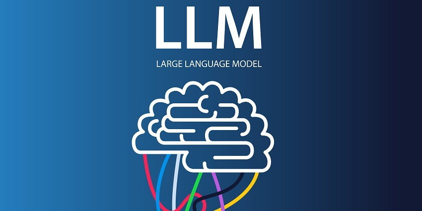
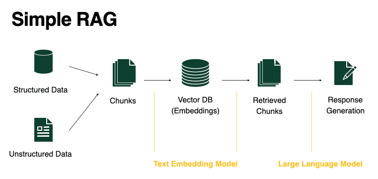

At present, LLMs have become indispensable tools, much like computers. From enhancing customer service through chatbots to driving breakthroughs in education, research, and content creation, LLMs are transforming how we interact with technology. However, as with any powerful tool, their use requires careful consideration of ethical implications, such as biases in data and the need for responsible deployment.
Despite their power, LLMs come with several limitations, including hallucinations, lack of context and domain expertise, data bias, and high costs and inefficiency. To address these limitations, Retrieval-Augmented Generation (RAG) offers a practical solution.
What is Large Langugae Model (LLM)?
A Large Language Model (LLM) is a type of artificial intelligence designed to understand and generate human-like text. These models are trained on massive datasets, enabling them to perform tasks such as answering questions, summarizing content, translating languages, and even creating written material that resembles human communication.
When we talk about LLMs, we refer to tools like ChatGPT, Gemini, Meta AI, and Copilot—the chatbots and AI assistants we interact with daily. By providing prompts, users can receive accurate, context-aware, and often creative responses, making these models an essential part of modern technology.
What is Vector Database?
Vector database is a specialized database that is one of a crucial components for LLM that enable AI to perform semantic search for the content you are looking for. What I mean by semantic search is that it can look for similarity instead of matching exact content. For example, if you search for the word “apple,” it can return documents containing related terms like “fruit,” “orchard,” or “cider,” depending on the context. This capability is essential for applications requiring nuanced understanding and retrieval of information, such as recommendation systems, personalized content delivery, and advanced data analysis.
Architecture of RAG
RAG consists of two main parts: the retriever and the generator.
(Retriever): The retriever searches external sources, like databases or document collections, to find relevant information. It uses methods like dense retrieval (e.g., FAISS with pre-trained embeddings) or sparse retrieval (e.g., BM25) to identify useful content based on vector similarity or keywords.
(Generator): The generator is usually a pre-trained language model (e.g., GPT, BERT, or T5). It takes the user’s query and the retrieved information to create a comprehensive response. By combining the generative model pre-trained knowledge with the facts from the retriever, it ensures the output is both accurate and contextually appropriate.

The architecture of RAG operates through a seamless integration of retrieval and generation, following a structured workflow:
Query Input: A user query, such as “What is retrieval-augmented generation?”, is fed into the system.
Retrieval Stage: The query is passed to the retriever, which searches the knowledge base for the most relevant documents or passages. This stage is handled by operation with vector database where the database returns back top-k elements that is closer to query.
Augmentation: The retrieved documents are concatenated with the user’s query, forming an augmented input. This augmentation ensures that the generative model has access to external, factual information when producing a response.
Generation Stage: The augmented input is passed to the generator, which is LLM in this context, which processes the query and retrieved evidence to generate a final response.
Output: The system produces a response that balances factual correctness and fluent language generation.
Advantages of RAG
Access to Current Information: RAG can pull data from external sources like databases or documents, helping it stay updated with real-time information not included in the training data, ensuring the responses are accurate and relevant.
Better at Handling Complex Queries: By retrieving detailed information from large collections, RAG is better equipped to handle complicated or specialized questions that require knowledge outside of its initial training.
Scalability: RAG can adapt to new topics without needing to retrain the entire model by dynamically retrieving relevant information, making it more efficient.
Reduced Hallucination: By relying on real, verified data retrieved from external sources, RAG reduces the risk of generating false or inaccurate information.
Improved Fine-Tuning Efficiency: RAG combines retrieval and generation, enabling the model to focus on creating responses based on the most relevant information, improving both accuracy and efficiency.
Flexibility: Since RAG separates the retrieval and generation processes, it’s easier to update the knowledge base or adjust the retrieval method without retraining the whole model.
Useful for Open-Domain Tasks: RAG is especially helpful for tasks like question-answering, dialogue, and summarization, as it can draw from a broad range of sources to cover various topics effectively.
Applications of RAG
Retrieval-Augmented Generation (RAG) models have a wide range of practical uses, especially in areas that need access to large, up-to-date information. Here are some key examples:
Open-Domain Question Answering: RAG can be used in chatbots or search engines to pull in relevant documents and answer complex questions, even on specialized topics. Example: A user asks about the latest climate change research. The RAG model finds the most recent studies or articles and provides an answer based on that.
Personalized Recommendations: RAG can improve recommendations by pulling up personalized content based on a person’s past interests or behaviors. Example: A movie recommendation system could gather the latest reviews, trailers, or plot summaries to suggest a movie tailored to the user’s tastes.
Medical Diagnosis Help: RAG can assist doctors by retrieving relevant medical case studies or guidelines to support diagnosis and treatment. Example: A doctor could use a RAG-powered system to find up-to-date medical guidelines for a specific condition and receive suggestions for treatments.
Knowledge Base Updates: RAG can help keep knowledge bases current by pulling in new data from trusted sources without needing to retrain the entire model. Example: A RAG system can regularly update a knowledge base with the latest research from scientific journals or news sources.
Educational Tools: RAG can be used in educational platforms to create personalized learning experiences by retrieving relevant study materials and generating tailored explanations for students. Example: An educational tool could use RAG to pull definitions, examples, and explanations from textbooks or online resources to make learning more interactive.
Conclusion
Retrieval-Augmented Generation (RAG) marks a major advancement in natural language processing (NLP). By combining information retrieval with text generation, it produces responses that are both accurate and contextually relevant, overcoming the limitations of purely generative models. RAG has the potential to improve applications like customer support, search engines, and educational content creation. As AI continues to develop, RAG will be key in shaping the future of smart information systems.